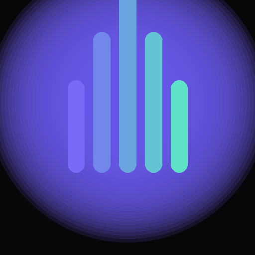

Normal Mode
Short original passages to build steady, real-world typing speed and rhythm.

A clean, minimal typing speed test — story mode for flow, code mode for practice, real WPM tracking either way.
What's inside
Short original passages to build steady, real-world typing speed and rhythm.
Random Python, Java, C++, and JavaScript snippets — practice typing syntax, not just prose.
WPM, accuracy, time, and error count update in real time as you type, no waiting for results.
Soft mechanical click feedback on every keystroke — toggle it on or off anytime.
A live bar graph reflects your typing rhythm as you go, not just a number at the end.
Add it to your home screen or desktop as a real app — works offline once installed.
Get started
Keystroke runs right in your browser — on PC, look for the install icon in your address bar; on phone, use "Add to Home Screen" to keep it one tap away.
Launch KeystrokePrefer it as a standalone app? Open the link above in Chrome or Edge, then use the Install option in the browser menu or address bar.